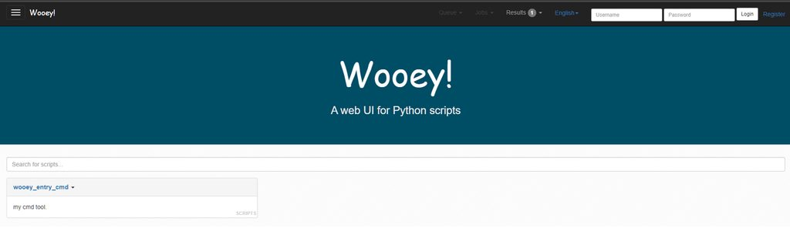
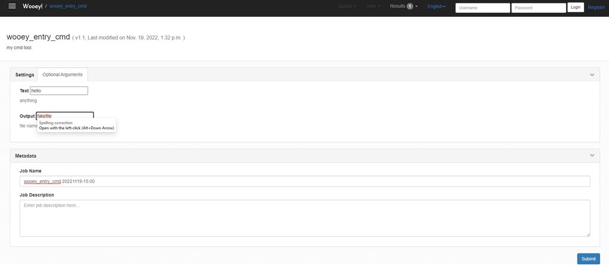
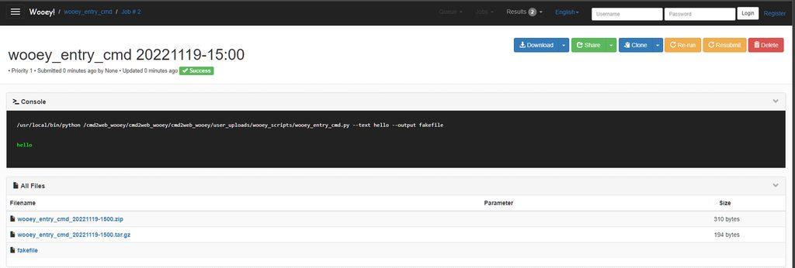

There is a problem always annoying the software developer: How to deliver your software to your user?
Recently, I wrote a tool for internal use, It is implemented in Python , and packaged as a command line program, I think it is esay enough for me to use, but the reality is cruel, not all the target user have technical background, the feedback is they all think it is hard to use it. when they need to use it, they would definitely asking me to support them again and again, so the software I developed became a nightmare of mine.
I have to think about what is best way to deliver software to end user, if you are working om a big project you don’t need to think about this, because their softwares are complicated and have a very mature deploy or delivery pipeline, you just working on a narrow stage of this pipeline. But I have to, now.
What Makes Command Line Tool Hard to Use?
Complicated Dependencies
Some colleagues cannot even install it, because the user enviroment are different, and my tool depends on a Python3.7 and some Pypi packages, cause Python3.7 is not the default python version for most linux distributions, so the user need to install it by themselves, it is a hard task for user without a technical background. This issue is easy to resolve, docker is a powerful weapon deal with the dependencies, I packaged my tool into a docker image with all the dependencies in, then I just need to told the user how to download the image and run it.
Has No Graphical User Interface
It’s already 21st century now, Most people living in this century don’t have a chance to use the command line. Many software deliver with a cross platform and user-friendly GUI, Software as-a Service is the main-stream delivery pattern, you don’t even need to install a software, you can just open a Web page and start to use it. So the best choice is to provide a GUI with my command line tool, It would be better to provide my Command Line as-a Service.
How to Convert Command Line to Web App
So what we need to do now is clear: Convert command line to Web App.
But how to do it? As experienced software engineer, you may open your flowchart drawing software and the start to design the architecture of a backend and front-end separated software architecture, you should choose a database: relational or documentary oriented, you must choose a backend programming language: Node.js or Python, you need to write a restful API by youself, finally you also need to implement a GUI As a Single-paged WebApp or Desktop GUI.
It sounds like a struggling work, and I refuse to do this, I need to find an easy way to achieve this goal: convert our command line to a web application, and the user can just click to set the arguments of the command line and the click submit button to run the tool. The most important thing is we don’t need to write too much code.
Wooey: A Script Server Matches All Our Needs
I searched on the internet and tried many projects. Finally I found it, it’s Wooey.
https://github.com/wooey/wooey
The command line tool is something like this, you can run it through the shell with specified arguments, and you can press Enter to execute it, the program will run for sometime and generate some file or print something to the console.
Firstly we package it into a docker image, just makes the command line can run anywhere, and the user don’t need to worry about the dependencies
The Wooey introduced itself as “a simple web interface to run command line Python scripts”, through Python we have the ability to run any command line program which installed inside operating system, if we write a script as wrapper for our command line and upload it to the wooey server, it will automatically transform our script to a Web App, that is what we all need!
Step By Step Solution
To keep things simple, assume your command line tool is equivalent to shell commands below:
sleep 10
echo $text
touch $filethe arguments are text and file, this “command line” will sleep 10 second, then echo the text and create an empty file.
We write a simple script to wrap it as a Python command line program:
# file name is wooey_entry_cmd.py
import argparse
import subprocess
import sys
parser = argparse.ArgumentParser(description="my cmd tool.")
parser.add_argument("--text", help="anything", type=str, default="nothing")
parser.add_argument("--output", help="file name", type=str, default="output")
def main():
args = parser.parse_args()
subprocess.run(["sleep", "10"])
subprocess.run(["echo", args.text])
subprocess.run(["touch", args.output])
return 0
if __name__ == "__main__":
sys.exit(main())Then we write the Dockerfile to package our command line tool and the wooey project toghter as a docker image, and convert our Python script to a Web App through the wooey provided tool.
FROM python:3.7 as cmd
# install you command tool here
# we use linux pre installed command, skip this
FROM cmd as wooey_ui
WORKDIR /cmd2web_wooey
RUN pip3.7 install wooey \
&& wooify -p cmd2web_wooey
COPY ./wooey_entry_cmd.py ./cmd2web_wooey/wooey_entry_cmd.py
COPY ./start_wooey.sh ./cmd2web_wooey/start_wooey.sh
RUN cd cmd2web_wooey \
&& sed -i "s/ALLOWED_HOSTS = \[\]/ALLOWED_HOSTS = \[\'\*\'\]/" ./cmd2web_wooey/settings/django_settings.py \
&& python3.7 manage.py addscript ./wooey_entry_cmd.py
WORKDIR /cmd2web_wooey/cmd2web_wooey
ENTRYPOINT ./start_wooey.sh
# port 8000 listening inside containerIn the Dockerfile, we specified the entrypoint as ./start_wooey.sh, and it is used to start the wooey project, it is just copied from the wooey document. The content of it is below:
#! /bin/bash
nohup celery -A cmd2web_wooey worker -c 3 --beat -l info &
python3.7 manage.py runserver 0.0.0.0:8000I must point out that I run celery inside the same docker container with the wooey server, and I changed the setting of Django project to accept any host, these are all bad practices and not safe at all. Considering my command line tool is for internal use, I don’t care about security issues.
The docker image building command is:
docker build -f Dockerfile --target wooey_ui -t cmd2web_wooey .That’s all we need to do, we now have a docker image provide our Command Line as-a Service. We can run a container from this image as a daemon server through command bellow:
docker run -d -p 8000:8000 cmd2web_wooey:latestNow we can assess our Command Line WebUI in browser through http://IP:8000

Click the “wooey_entry_cmd” script, that is the name of our python command line script, then set the arguments through the WebUI, click “submit” to run the command.

Wait a moment, and we can get the console output and the generated empty file from the result.

code of this post are published on:
https://github.com/XiGou/cmd2web_wooey
Refs: